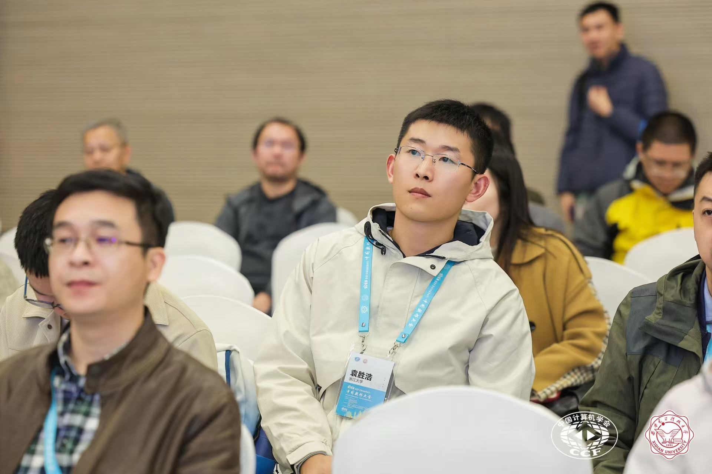

|

|
Shenghao YUANResearcher, Zhejiang UniversityEmail: shenghao.yuan@inria.fr / nuaaysh@126.com Software: GitLab / GitHub  https://orcid.org/0000-0002-8467-5827
https://orcid.org/0000-0002-8467-5827
|
Education
-
Undergraduate. Sept.2013 - Jun.2017, Software Engineering
- College of Computer Science and Technology (CCST), Nanjing University of Aeronautics and Astronautics (NUAA), China
-
Master. Sept.2017 - Apr.2020, Software Engineering (supervised by Prof. Zhibin Yang)
- College of Computer Science and Technology (CCST), Nanjing University of Aeronautics and Astronautics (NUAA), China
-
PhD. Sept.2020 - Dec.2023, Computer Science (Co-advisors: Jean-Pierre Talpin and Frédéric Besson)
- The Time, Events and Architectures(TEA) team, Université de Rennes / Inria-Rennes, Franch
Research Interests
I am interested in theorem proving (Coq and Isabelle/HOL), compiler/OS formal verification. Especially, Linux eBPF-related verification~Current Research
- Compiler Verification (CompCert-related)
-
OS/VM Verification
- RIOT-OS rBPF VM [MIDDLEWARE2022], bootloader [MEMOCODE2021]
- Solana Blockchain VM [SETTA2024]
- Linux eBPF (WIP)
-
Model-driven development
- AADL / Synchronous Lanuage [SCP2021]
Projects
I join the TRust2 project currently, working on formal verification of Rust. The Solana verification is a part of TRust2: the Solana eBPF VM is a real-world Rust case study.-
2025-01 to 2025-12: End-to-end formal verification of Solana eBPF JIT Compiler (Overivew) [2024CCF-Huawei Populus Grove Fund: Formal Method Track (News in Chinese)]
- Task-1: verify Solana x64 JIT compiler in Isabelle/HOL
- Task-2: implement a parser (from Rust MIR to Isabelle/HOL) in Rust
{kind=link}
Selected Publications [DBLP] [Google Scholar] (* = corresponding author)
-
SETTA2024: Formalizing x86-64 ISA in Isabelle/HOL: A Binary Semantics for eBPF JIT Correctness
Jiayi Lu, Shenghao Yuan*, David Sanan, Yongwang Zhao
In 10th Symposium on Dependable Software Engineering: Theories, Tools and Applications (CCF-C conf) [local copy] -
CAV2024: End-to-end Mechanized Proof of a JIT-accelerated eBPF Virtual Machine for IoT
Shenghao Yuan*, Frédéric Besson, Jean-Pierre Talpin
In 36th International Conference on Computer-Aided Verification (CCF-A conf) [local copy] -
SETTA2023: Making an eBPF Virtual Machine Faster on Microcontrollers: Verified Optimization and Proof Simplification
Shenghao Yuan*, Benjamin Lion, Frédéric Besson, Jean-Pierre Talpin
In 9th Symposium on Dependable Software Engineering: Theories, Tools and Applications (CCF-C conf) [local copy]
(An invited extension to Journal of Systems Architecture, CCF-B journal)
-
CAV2022: End-to-end Mechanised Proof of an eBPF Virtual Machine for Microcontrollers
Shenghao Yuan*, Frédéric Besson, Jean-Pierre Talpin, Samuel Hym, Koen Zandberg, Emmanuel Baccelli
In 34th International Conference on Computer-Aided Verification (CCF-A conf) [local copy] [slide] -
SCP2021: Multi-task Ada code generation from synchronous dataflow programs on multi-core: Approach and industrial study
Zhibin Yang*, Shenghao Yuan, Jean-Paul Bodeveix, Mamoun Filali, Tiexin Wang, Yong Zhou
Science of Computer Programming (CCF-B journal) [local copy]
Visitors: